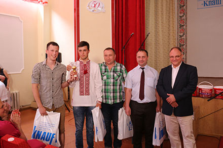
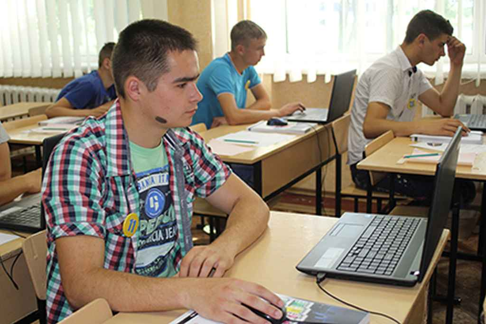

Мета опорядження будівель і приміщень – надати поверхні будівельних конструкцій естетичну промовистість, захистити від руйнівних впливів, поліпшити санітарно-гігієнічні і технологічні умови експлуатації, позитивно впливати на емоційний стан людини.
У будь-якому будівельному виробництві, на будь-якій будові неминуче наступає відповідальний період, коли будівельники підходять до виконання завершального циклу робіт з оздоблювання зведеної будівлі або споруди. Іншими словами, приходить час для штукатурних, лицювальних, малярських, шпалерних і інших робіт оздоблювального циклу, коли будівництво цілком належить будівельникам опоряджувальних фахів – опоряджувальникам.
Маляр працює в будівельних організаціях, ремонтно-будівельних і житлово-комунальних управліннях. Фахівець, який займається фарбуванням будівель, споруд, предметів інтер'єру, обладнання, інструментів. Маляр фарбує поверхні за допомогою пензлів, валиків, фарбопультів, пістолетів та інших пристосувань, наклеює шпалери. Він володіє прийомами роботи для створення високоякісного декоративного тиньку, а також прийомами багатоколірного фарбування фасадів, будівель спеціальними синтетичними сумішами.
Суть роботи - внутрішня обробка житлових і нежитлових приміщень. Сюди входить вирівнювання стін, стель, дверних і віконних укосів, також поклейка різних видів шпалер на стіни і стеля. І, звичайно, жоден ремонт не обходиться без фарбування. Фарбуються в оштукатурені та вирівняні поверхні - стіни і стелі, проте в даний час дуже популярно використовувати шпалери під фарбування - на підготовлену поверхню клеяться білі шпалери під фарбування і після фарбують їх в потрібний колір. Також поклейка фотошпалер і оформлення дизайнерських конструкцій (в основному, з гіпсокартону: наприклад, декоративні шафи, ніші або світильники на стелю у формі літаючої тарілки) - для особливо вишуканих замовників. Він готує під фарбування бетонні, дерев'яні та металеві конструкції. Поверхні забарвлює вручну або за допомогою валиків, фарбопультів, пістолетів та інших пристосувань, наклеює шпалери. Він володіє прийомами роботи високоякісної і декоративної штукатурки, а також прийомами багатоколірного фарбування фасадів, будівель спеціальними синтетичними складами.
ЛИЦЮВАЛЬНИК-ПЛИТОЧНИК
Одна з найцікавіших будівельних професій, специфіка якої полягає в тому, що лицювальник має справу в основному з внутрішніми поверхнями будівель.
Лицювальник - плиточник виконує обробку фасадів будівель керамічними та бетонними плитами. Виконує укладання кам'яних і бетонних ступенів зовнішніх сходів. Встановлює тумби огороджень і парапетів з тесаного каменю. Виконує облицювання набережних і прогонових будов мостів. Виконує роботи по влаштуванню плиткових підлог і облицюванню внутрішніх поверхонь стін лазень, санітарних вузлів, ванних кімнат. Сортує керамічну плитку по виду, розміром, кольором. Готує розчини, очищає поверхні перед укладанням керамічної плитки. Ремонтує облицювання поверхні.
Будматеріалами, з якими доводиться працювати представникам цієї професії є
- керамічна плитка;
- мозаїка;
- мармур;
- граніт;
- кахель;
- керамограніт;
- штучний камінь
Дерево на дотик завжди тепле. Набуваючи форми під руками майстра, воно цим теплом ділиться, зм’якшуючи серця. Творчість в столярних майстернях одухотворена, як відсвіт спілкування з живою енергією.
читати далі...
Монтажник гіпсокартонних конструкцій; монтажник систем утеплення будівель
Це спеціаліст по гіпсокартонних конструкціях, від якого залежить естетичний вигляд інтер’єру. Також це робітник який виконує комплекс робіт по утепленню фасадів для зниження до мінімуму тепловитрат через огороджувальні стінові конструкції будинків і споруд. читати далі...
Оператор електронно-обчислювальних та обчислювальних машин; обліковець з реєстрації бухгалтерських даних
Користуватись комп’ютерними гаджетами сьогодні вміє й дошкільня. А хочете розуміти архітектуру персонального комп’ютера, заввиграшки створити блог чи власний сайт, спроектувати 3D-принтер для будівництва? Тоді вам до нас. Створюючи віртуальний Всесвіт, майбутні оператори ЕОМ змінюють на краще об’єктивну реальність.
читати далі...
Муляр; пічник; штукатур;
Робітники цих професій працюють над будівлею від закладин. А, як відомо, якість фундаменту визначає надійність, довговічність будівлі. Під впливом професії учнівські характери формуються міцними, незламними. Муляри, пічники, бетонярі і монтажники музику дня кладуть на нотний лист каменя. читати далі...
Руками опоряджувальників створюється комфорт і затишок в оселях, приноситься в наше життя тепло і гармонія. Невтомні руки майстрів створюють складні сюжети із шпаклівок, штукатурок і шпалер, черпаючи натхнення в барвах землі і неба. Ці професії навчать бачити незвичне у буденному, прекрасне в непомітному.
читати далі...
Найкращий "Опоряджувальник"

На базі вищого професійного училища №7 міста Калуш відбувся сеукраїнський конкурс «Knauf MGK 2018- Україна» з професії «Монтажник гіпсокартонних конструкцій». В конкурсі змагалася 21 команда, усі учасники представляли професійні заклади, на базі яких працюють навчально-практичні центри “Кнауф”. Команда нашого училища складалася із викладача Похилюка В. В., майстра виробничого навчання Савченка М. А. та учнів Романчука Костянтина та Кулініча Сергія (група 11-ВПУ).За результатами оцінок журі виборола ІІІ місце! «Опоряджувальник»
ННайкращий "Штукатур"

В обласному етапі Всеукраїнського конкурсу фахової майстерності серед учнів професійно-технічних навчальних закладів з професії «Штукатур» честь нашого училища захищав учень гр. №25 Крупко Іван. У напруженій боротьбі Іван здобув переконливу перемогу та посів перше місце! В заключному етапі Всеукраїнського конкурсу - Іван посів 7 місце. Вітаємо Крупка Івана та його наставників – викладачів Плотнік М. С. і Маліновську Н. М. та майстра виробничого навчання Ярмолюк Л. Г.
Штукатур